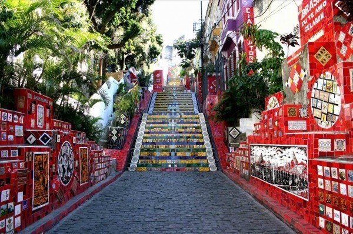

Seja para conhecer a “Cidade Maravilhosa” do Rio de Janeiro ou para
descobrir quais outros encantos o estado fluminense esconde em suas
cidades, viajar para o Rio de Janeiro é sempre uma escolha certeira.
O que não falta por aqui são belas praias e muito sol, mas
engana-se quem acredita ser apenas isso que os cariocas têm a oferecer.
Cidades históricas, pontos turísticos icônicos, museus futuristas,
festivais durante o ano todo, gastronomia farta e muito mais! Preparado
para descobrir?
Ainda não sabe onde ficar no Rio de Janeiro? Então está na hora de conferir nossas indicações de ótimos hotéis na capital carioca. Encontramos hospedagens baratas, luxuosas e com bom custo-benefício para sua viagem ser a melhor possível!
Quando pensamos em viajar para o Rio de Janeiro, automaticamente imaginamos todas praias que desejamos ir. Mas já parou para pensar que a cidade tem muito mais a oferecer do que apenas suas praias?
Os museus no Rio de Janeiro, por exemplo, são um passeio e tanto
para os amantes da história.
O Museu do Amanhã, recém
inaugurado e a poucos passos do MAR, reúne arte e tecnologia em um
prédio de arquitetura marcante projetado pelo espanhol Santiago
Calatrava. Além de sua mostra fixa, o museu recebe mostras
temporárias e espetáculos de dança e teatro.
O ideal é dedicar um turno inteiro, manhã ou tarde, e conhecer o essencial. A melhor sugestão de roteiro no Jardim Botânico é se deixar levar. Isso mesmo, é circular livremente, deixando-se surpreende
Bondinho? Na verdade é um teleférico, mas é conhecido como bondinho
devido a questões históricas e populares. Mas o importante é que uma
das principais atrações do Brasil, reconhecida internacionalmente,
te espera sob o sol da Cidade Maravilhosa.
Um dos cartões
postais mais visitados do país e do mundo. Um tour inesquecível.
A Escadaria Selarón, na Lapa, é famosa por ser coberta por mosaico É um dos pontos mais visitados da Lapa e também já serviu de cenário para artistas internacionais gravarem vídeos. O local fica em uma região tradicional da cidade e a escadaria leva a outro bairro especial: Santa Teresa.

Não existe época ruim quando ir ao Rio de Janeiro. O Rio é um destino
para o ano inteiro. Aqui não há nenhuma estação excessivamente
chuvosa.
o frio do meio do ano é perfeitamente suportável, e é
relativamente comum dar praia em julho ou agosto. Isso não quer dizer,
obviamente, que todos os dias da sua viagem serão quentes e ensolarados.
Frentes frias, previstas ou inesperadas, passam pela cidade em todas as
estações e podem, sim, ocasionar uma seqüência de dias sem praia.
‘Cariocas
não gostam de dias nublados’, diz a canção da (gaúcha) Adriana
Calcanhotto. Os visitantes tampouco. Mas felizmente há muito o que fazer
em dias de chuva.